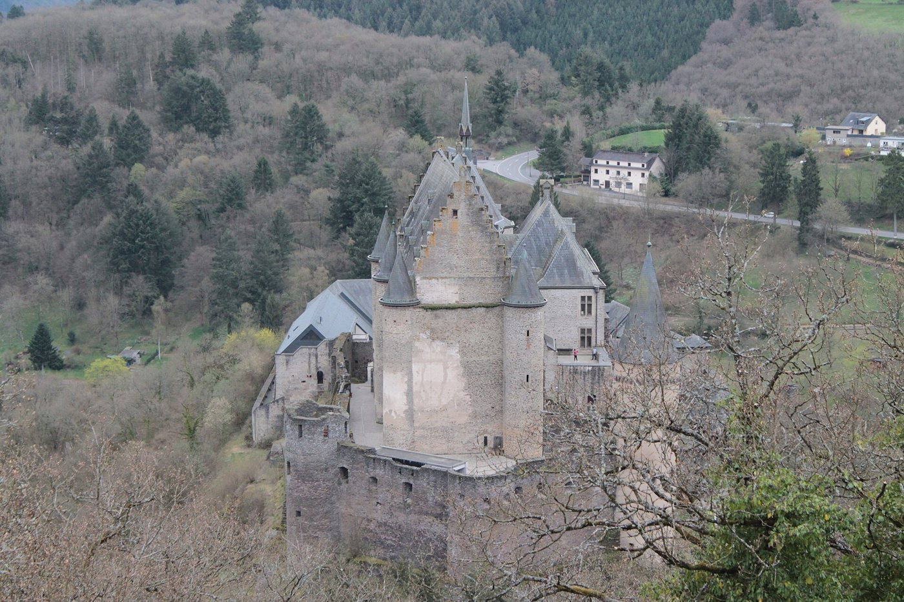
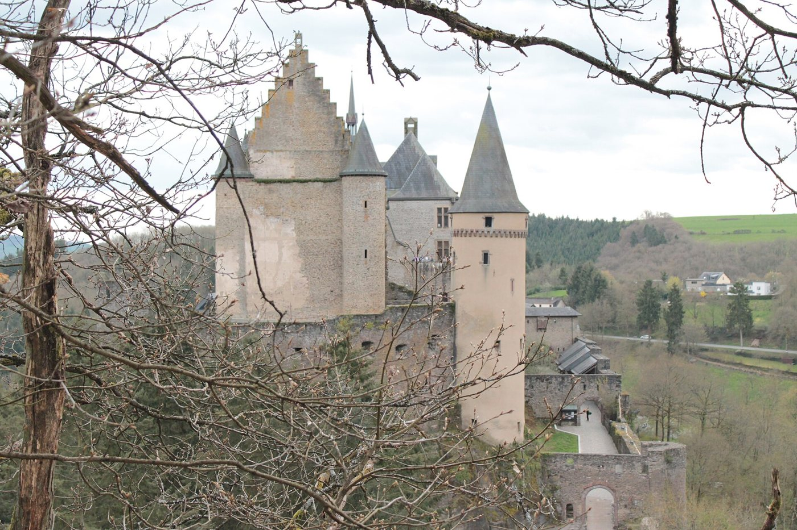
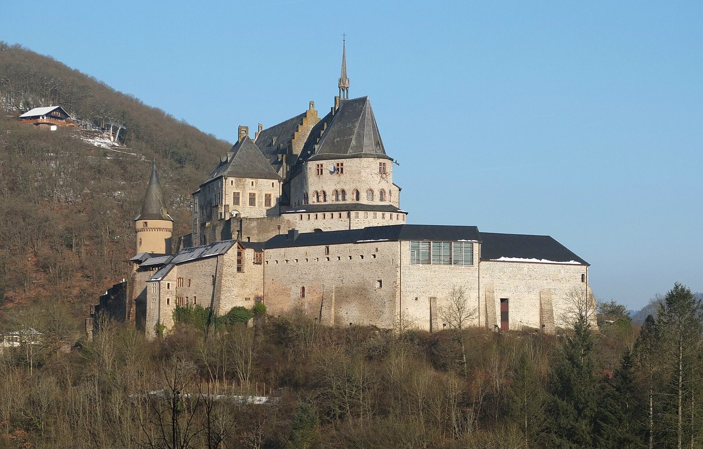
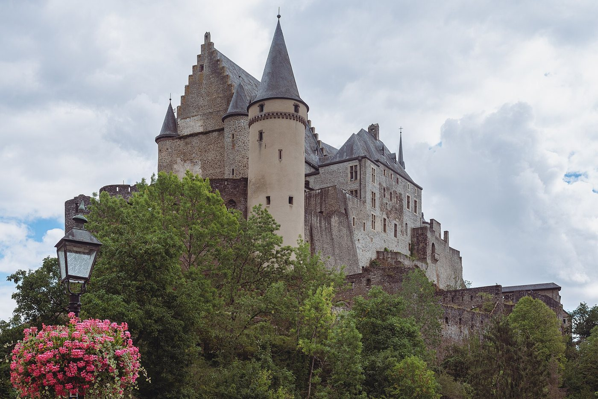
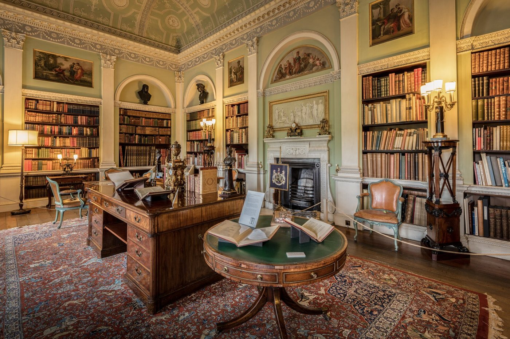
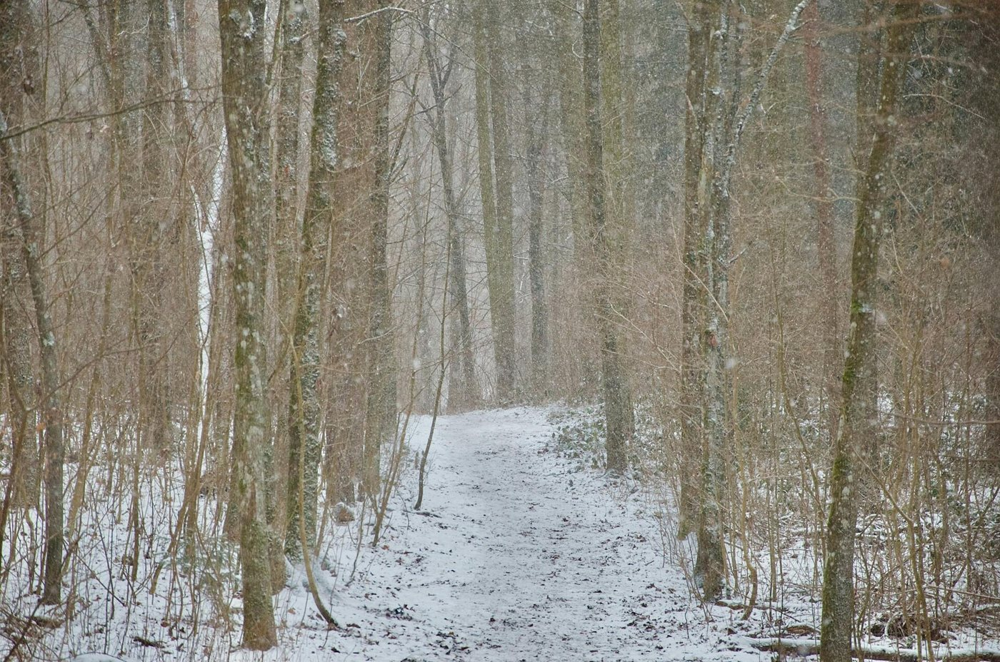
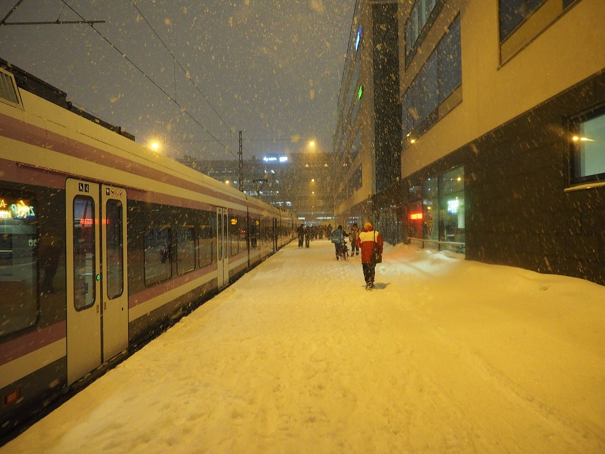
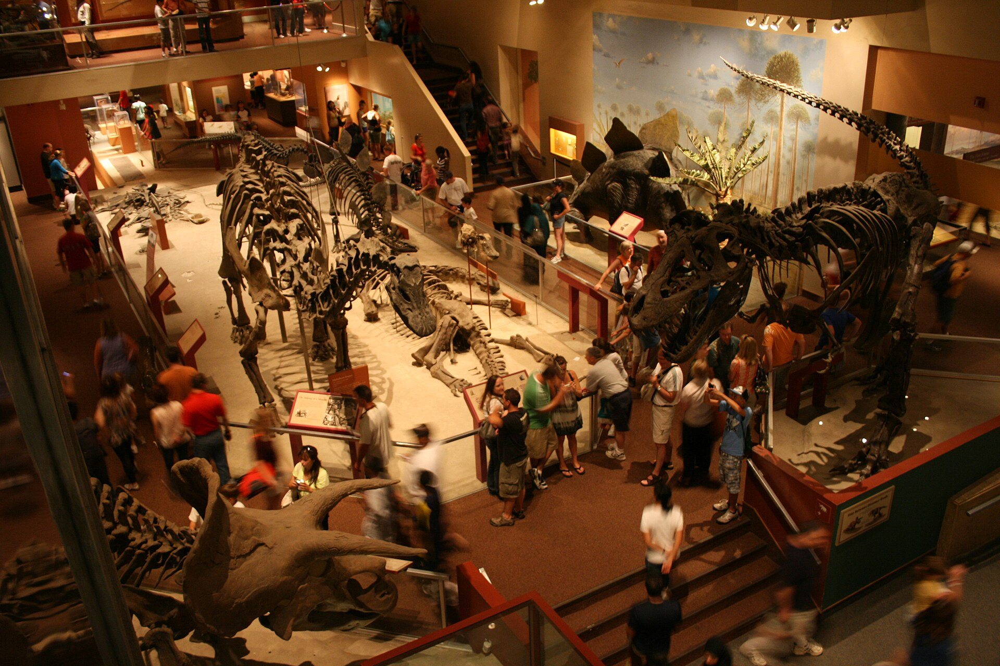

Je raconte comme un auteur
Ich erzähle wie ein AutorBonjour Luka ! Aujourd'hui, tu deviens auteur. Avec Irène, tu vas apprendre à construire une histoire en cinq étapes, à choisir le bon temps et à raconter à l'oral comme à l'écrit. Notre histoire se passe au château de Vianden. Tu es prêt ? Hallo Luka! Heute wirst du Autor. Mit Irène lernst du, eine Geschichte in fünf Schritten aufzubauen, die richtige Zeitform zu wählen und mündlich wie schriftlich zu erzählen. Unsere Geschichte spielt in der Burg Vianden. Bist du bereit?
On se réveille !
Wir werden wach!Luka, raconte à Irène ton dernier week-end en trois phrases : où tu étais, ce que tu as fait, ce que tu feras le week-end prochain. Luka, erzähl Irène in drei Sätzen von deinem letzten Wochenende: wo du warst, was du gemacht hast, was du nächstes Wochenende machen wirst.
Luka, maintenant dis à Irène quelle forme choisir. Luka, sag Irène jetzt, welche Form sie wählen soll.
Hier, je ____ au cinéma avec mon frère.
Gestern bin ich mit meinem Bruder ins Kino gegangen.Quand j'étais petit, je ____ peur du noir.
Als ich klein war, hatte ich Angst vor der Dunkelheit.Demain, nous ____ le château de Vianden.
Morgen werden wir die Burg Vianden besichtigen.

Les cinq étapes d'une histoire
Die fünf Schritte einer GeschichteUne histoire, c'est comme un film en cinq scènes. Pour chaque scène, tu as des mots d'aide pour commencer. Eine Geschichte ist wie ein Film in fünf Szenen. Für jede Szene hast du Hilfswörter, um anzufangen.
Le début
Der AnfangQui ? Où ? Quand ? Il fait quel temps ? Wer? Wo? Wann? Wie ist das Wetter?
Le problème
Das ProblemQu'est-ce qui arrive de surprenant ? Was passiert Überraschendes?
Les aventures
Die AbenteuerQu'est-ce que les personnages font ? Was machen die Figuren?
La solution
Die LösungComment le problème se termine ? Wie endet das Problem?
La fin
Das EndeEt maintenant ? Et plus tard ? Und jetzt? Und später?
Remets l'histoire dans l'ordre
Bring die Geschichte in die richtige ReihenfolgeLuka, dis à Irène sur quelle phrase cliquer : d'abord le début, puis le problème, les aventures, la solution et la fin. Luka, sag Irène, welchen Satz sie anklicken soll: zuerst den Anfang, dann das Problem, die Abenteuer, die Lösung und das Ende.
Raconte avec tes mots
Erzähl mit deinen eigenen WortenLuka, ferme les yeux trente secondes, puis raconte l'histoire du château à Irène sans lire. Utilise un mot d'aide pour chaque étape. Luka, schließ die Augen dreißig Sekunden lang und erzähl Irène dann die Geschichte der Burg, ohne zu lesen. Benutze für jeden Schritt ein Hilfswort.
C'était un samedi de novembre et il faisait froid. La classe visitait le château de Vianden. Soudain, Luka et Ben ont entendu un bruit. Alors, ils sont entrés dans une salle sombre et ils ont trouvé un vieux livre. Finalement, le guide est arrivé : c'était un chat ! Depuis ce jour, Luka adore les châteaux.
Es war ein Samstag im November und es war kalt. Die Klasse besichtigte die Burg Vianden. Plötzlich hörten Luka und Ben ein Geräusch. Also gingen sie in einen dunklen Raum und fanden ein altes Buch. Schließlich kam der Führer: Es war eine Katze! Seit diesem Tag liebt Luka Burgen.
Quel temps pour raconter ?
Welche Zeitform zum Erzählen?L'imparfait = le décor
Imperfekt (imparfait) = die KulisseTu décris : le temps qu'il fait, les lieux, les personnes, ce qu'on ressent, les habitudes. L'histoire ne bouge pas. Du beschreibst: Wetter, Orte, Personen, Gefühle, Gewohnheiten. Die Geschichte bewegt sich nicht.
Il faisait froid.
Es war kalt.Le château était immense.
Die Burg war riesig.Nous avions un peu peur.
Wir hatten ein bisschen Angst.Le passé composé = l'action
Passé composé = die HandlungIl se passe quelque chose, une seule fois : l'histoire avance. Etwas passiert, ein einziges Mal: Die Geschichte geht weiter.
Soudain, la porte s'est fermée.
Plötzlich ging die Tür zu.Ben a crié.
Ben hat geschrien.Nous sommes partis en courant.
Wir sind weggerannt.Le présent = les paroles
Präsens = die direkte RedeQuand les personnages parlent, entre guillemets, on utilise le présent. Wenn die Figuren sprechen, in Anführungszeichen, benutzt man das Präsens.
« Tu entends ce bruit ? »
„Hörst du dieses Geräusch?“« J'ai peur, on part ! »
„Ich habe Angst, wir gehen!“Le futur = la fin et les projets
Futur = das Ende und die PlänePour dire ce qui va se passer plus tard, après l'histoire. Um zu sagen, was später, nach der Geschichte, passieren wird.
Un jour, je reviendrai.
Eines Tages werde ich zurückkommen.Nous ne l'oublierons jamais.
Wir werden es nie vergessen.Décor ou action ?
Kulisse oder Handlung?Luka, pose-toi la question magique, puis dis à Irène quelle forme choisir. Luka, stell dir die Zauberfrage und sag Irène dann, welche Form sie wählen soll.
Il ____ nuit quand nous sommes arrivés au château.
Es war Nacht, als wir an der Burg ankamen.Le guide ____ un grand manteau noir.
Der Führer trug einen großen schwarzen Mantel.Tout à coup, la lumière ____.
Plötzlich ging das Licht aus.Ben ____ très peur et il tremblait.
Ben hatte große Angst und zitterte.Alors, j'____ ma lampe de poche.
Also habe ich meine Taschenlampe angemacht.Dans la salle, il y ____ des armures et des tableaux.
Im Raum gab es Rüstungen und Gemälde.Ensuite, nous ____ dans l'escalier.
Dann sind wir die Treppe hinuntergegangen.Chaque été, mes grands-parents ____ à Vianden.
Jeden Sommer fuhren meine Großeltern nach Vianden.
Le bon temps au bon moment
Die richtige Zeit im richtigen MomentLuka, ici il y a quatre temps possibles. Regarde bien les mots autour du verbe. Luka, hier gibt es vier mögliche Zeitformen. Schau dir die Wörter um das Verb genau an.
Ben a murmuré : « Je ____ quelque chose ! »
Ben flüsterte: „Ich sehe etwas!“Plus tard, je ____ guide dans un château.
Später werde ich Führer in einer Burg sein.Ce matin-là, le ciel ____ gris.
An diesem Morgen war der Himmel grau.Soudain, un chat ____ de derrière la porte.
Plötzlich kam eine Katze hinter der Tür hervor.Le guide a dit : « Vous ____ le droit d'entrer ici. »
Der Führer sagte: „Ihr dürft hier nicht hinein.“Nous ____ jamais cette aventure !
Wir werden dieses Abenteuer nie vergessen!

Mini-rappels : former les temps
Kleine Erinnerungen: die Zeitformen bildenPassé composé
avoir ou être + participe passé
avoir oder être + PartizipAvec être : aller, venir, partir, arriver, entrer, sortir, monter, descendre, tomber, rester, naître, mourir, et les verbes en se. On accorde : elle est partie, ils sont entrés. Mit être: diese Verben der Bewegung und alle reflexiven Verben. Man passt an: elle est partie, ils sont entrés.
Imparfait
radical de nous + -ais, -ais, -ait, -ions, -iez, -aient
Stamm von nous + Endungennous avons → j'avais · nous faisons → il faisait · nous prenons → ils prenaient. Une seule exception : être → j'étais. Nur eine Ausnahme: être → j'étais.
Futur simple
infinitif + -ai, -as, -a, -ons, -ez, -ont
Infinitiv + EndungenLes verbes en -re perdent le e : prendre → je prendrai. Radicaux irréguliers : être → ser-, avoir → aur-, aller → ir-, faire → fer-, voir → verr-, venir → viendr-, pouvoir → pourr-. Verben auf -re verlieren das e. Unregelmäßige Stämme muss man auswendig lernen.
Cartes éclair
BlitzkartenLuka, réponds à voix haute le plus vite possible, puis Irène retourne la carte. Luka, antworte so schnell wie möglich laut, dann dreht Irène die Karte um.
Conjugue dans l'histoire
Konjugiere in der GeschichteLuka, dis la forme à Irène : elle l'écrit. Le temps est indiqué entre parenthèses. Luka, sag Irène die Form: Sie schreibt sie. Die Zeitform steht in Klammern.
Ce jour-là, nous (être, imparfait) très fatigués.
An diesem Tag waren wir sehr müde.Ben et moi, nous (entrer, passé composé) dans la tour.
Ben und ich sind in den Turm gegangen.Ma sœur (tomber, passé composé) dans l'escalier.
Meine Schwester ist auf der Treppe gefallen.J' (prendre, passé composé) une photo du tableau.
Ich habe ein Foto von dem Gemälde gemacht.Les chevaliers (vivre, imparfait) dans ce château.
Die Ritter lebten in dieser Burg.L'année prochaine, nous (faire, futur) une visite de nuit.
Nächstes Jahr werden wir eine Nachtführung machen.Un jour, tu (voir, futur) ce château toi aussi.
Eines Tages wirst du diese Burg auch sehen.Le guide nous (dire, passé composé) un secret.
Der Führer hat uns ein Geheimnis verraten.
Les mots qui t'aident à choisir
Die Wörter, die dir bei der Wahl helfenCertains mots sont comme des panneaux : ils t'indiquent le temps à utiliser. Manche Wörter sind wie Schilder: Sie zeigen dir, welche Zeitform du benutzen sollst.
Soudain · Tout à coup · Ce jour-là · Puis · Ensuite · Hier
Plötzlich · Auf einmal · An diesem Tag · Dann · Danach · GesternD'habitude · Chaque jour · Autrefois · Quand j'étais petit · Pendant que
Normalerweise · Jeden Tag · Früher · Als ich klein war · WährendMaintenant · Aujourd'hui · « … » (paroles)
Jetzt · Heute · „…“ (direkte Rede)Demain · Bientôt · Plus tard · Un jour · L'année prochaine
Morgen · Bald · Später · Eines Tages · Nächstes JahrLe mot qui commande
Das Wort, das bestimmtLuka, trouve le mot qui t'aide dans la phrase, puis choisis la forme. Luka, finde das Hilfswort im Satz und wähle dann die Form.
D'habitude, je ____ le bus pour aller à l'école.
Normalerweise nahm ich den Bus zur Schule.Tout à coup, mon téléphone ____.
Plötzlich hat mein Handy geklingelt.Bientôt, nous ____ les vacances de Noël.
Bald haben wir Weihnachtsferien.Pendant que je lisais, mon frère ____ du piano.
Während ich las, spielte mein Bruder Klavier.Maintenant, je ____ à Luxembourg.
Jetzt lebe ich in Luxemburg.Ce jour-là, nous ____ un écureuil dans la forêt.
An diesem Tag haben wir ein Eichhörnchen im Wald gesehen.

L'atelier : ton histoire à toi
Die Werkstatt: deine eigene GeschichteLuka, choisis une photo. D'abord, tu racontes ton histoire à Irène à l'oral. Ensuite, tu l'écris dans la boîte : la boîte vérifie toute seule si tu as bien utilisé les étapes et les temps. Luka, wähle ein Foto. Zuerst erzählst du Irène deine Geschichte mündlich. Dann schreibst du sie in das Feld: Das Feld prüft von selbst, ob du die Schritte und die Zeitformen benutzt hast.

La forêt sous la neige
Der Wald im SchneeC'était un dimanche d'hiver. Il neigeait et la forêt était silencieuse. Je me promenais avec mon chien. Soudain, j'ai vu des traces bizarres dans la neige. Alors, nous les avons suivies jusqu'à un vieil arbre. Finalement, nous avons découvert un renard et ses petits. Depuis ce jour, je regarde toujours la neige avec attention. Un jour, je reviendrai avec un appareil photo.
Es war ein Wintersonntag. Es schneite und der Wald war still. Ich ging mit meinem Hund spazieren. Plötzlich sah ich seltsame Spuren im Schnee. Also folgten wir ihnen bis zu einem alten Baum. Schließlich entdeckten wir einen Fuchs und seine Jungen. Seit diesem Tag schaue ich mir den Schnee immer genau an. Eines Tages werde ich mit einer Kamera zurückkommen.
Le dernier train
Der letzte ZugIl était tard et il faisait très froid. J'attendais le train avec ma mère. Tout à coup, le train est parti sans nous ! Ensuite, une dame nous a aidés : elle nous a montré un autre train. Enfin, nous sommes arrivés à la maison à minuit. Maintenant, je regarde toujours l'heure deux fois. La prochaine fois, nous partirons plus tôt.
Es war spät und sehr kalt. Ich wartete mit meiner Mutter auf den Zug. Plötzlich fuhr der Zug ohne uns ab! Dann half uns eine Frau: Sie zeigte uns einen anderen Zug. Endlich kamen wir um Mitternacht nach Hause. Jetzt schaue ich immer zweimal auf die Uhr. Nächstes Mal werden wir früher losgehen.
Une nuit au musée
Eine Nacht im MuseumC'était la sortie de classe au musée d'histoire naturelle. Les dinosaures étaient immenses et tout le monde prenait des photos. Soudain, toutes les lumières se sont éteintes. Alors, mon ami a allumé sa lampe et nous avons cherché la sortie. À la fin, le gardien nous a trouvés à côté du tyrannosaure. Depuis ce jour, j'adore les dinosaures. Plus tard, je serai paléontologue !
Es war der Klassenausflug ins Naturkundemuseum. Die Dinosaurier waren riesig und alle machten Fotos. Plötzlich gingen alle Lichter aus. Also machte mein Freund seine Lampe an und wir suchten den Ausgang. Am Ende fand uns der Wächter neben dem Tyrannosaurus. Seit diesem Tag liebe ich Dinosaurier. Später werde ich Paläontologe!J'écris mon histoire
Ich schreibe meine Geschichte0 mot
Le défi : raconte au passé
Die Herausforderung: erzähl in der VergangenheitDu présent au passé
Vom Präsens in die VergangenheitLuka, cette histoire est au présent. Dis-la à Irène au passé : imparfait pour le décor, passé composé pour les actions. Irène écrit ta phrase. Luka, diese Geschichte ist im Präsens. Sag sie Irène in der Vergangenheit: imparfait für die Kulisse, passé composé für die Handlungen. Irène schreibt deinen Satz.
Il fait nuit et la ville est calme.
Soudain, mon ami entend une musique.
Nous descendons dans le Grund.
Des musiciens jouent près de la rivière.
Ils nous invitent à danser.
La fin, c'est toi qui la racontes
Das Ende erzählst duLuka, invente la fin de cette histoire dans le Grund : une solution au passé composé et une phrase au futur. Luka, erfinde das Ende dieser Geschichte im Grund: eine Lösung im passé composé und einen Satz im Futur.
Finalement, nous avons dansé jusqu'à minuit et mes parents sont venus nous chercher. Depuis ce jour, j'adore la musique. L'été prochain, nous reviendrons écouter ces musiciens.
Schließlich tanzten wir bis Mitternacht und meine Eltern holten uns ab. Seit diesem Tag liebe ich Musik. Nächsten Sommer werden wir zurückkommen, um diese Musiker zu hören.À revoir
Zum WiederholenQuand tu réponds aux exercices, les points à revoir apparaissent ici, avec un lien vers la règle.